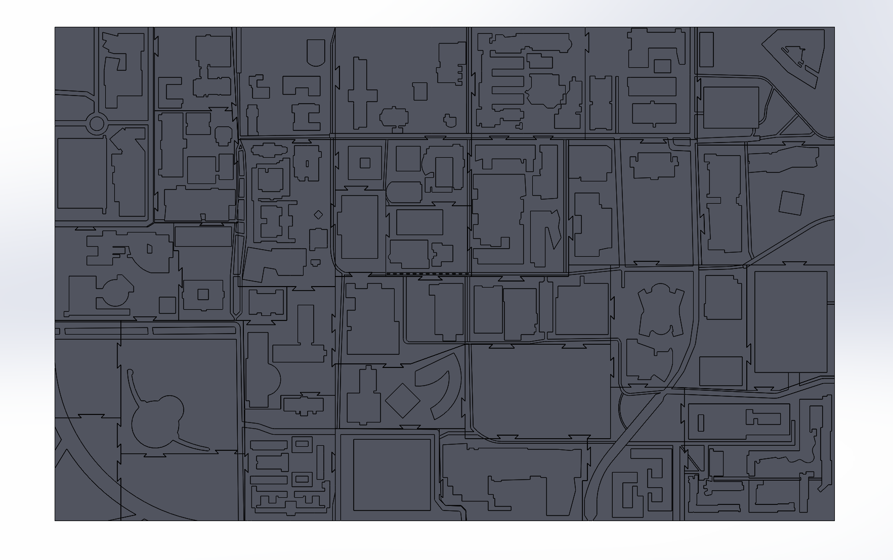
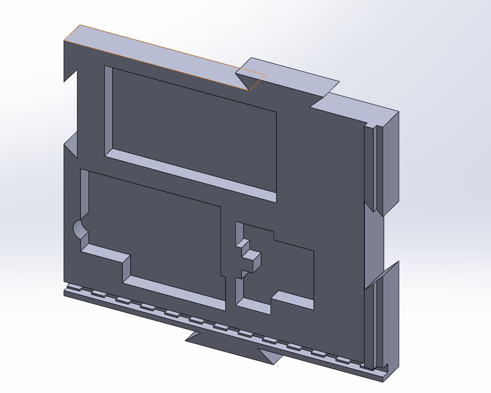
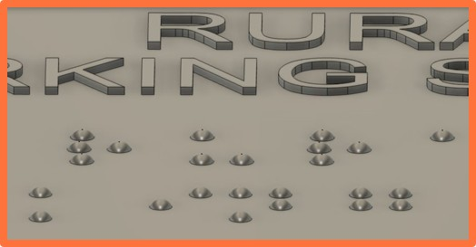
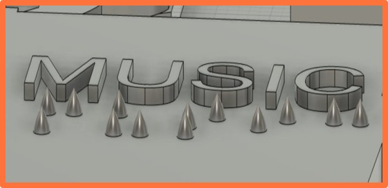
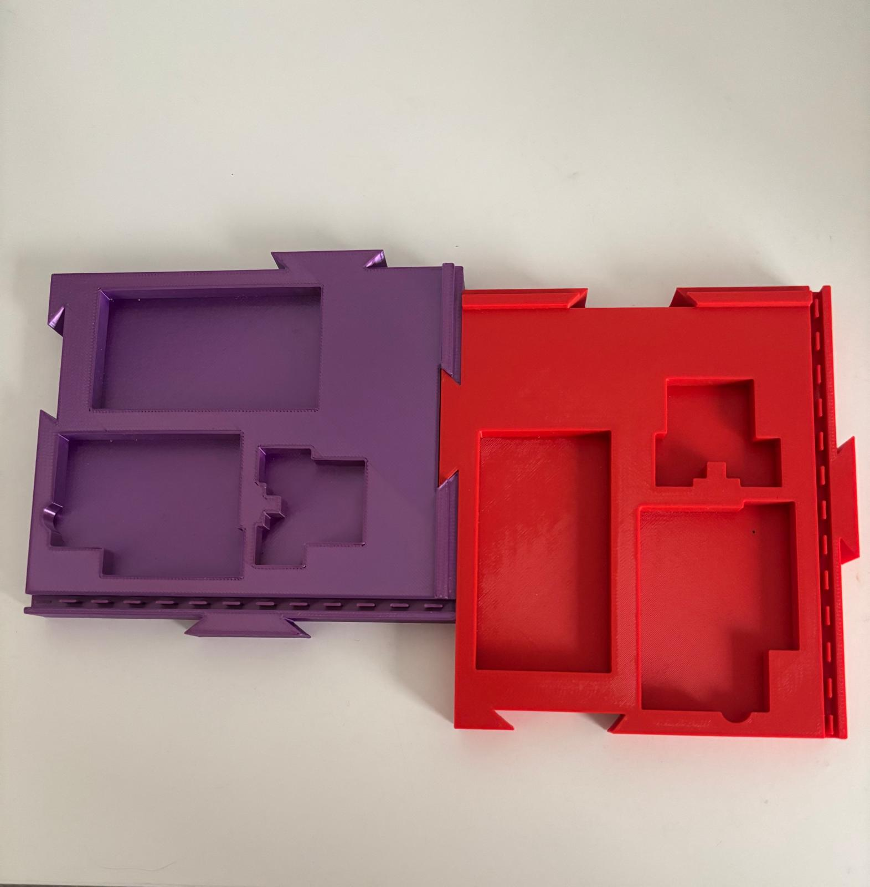

Gallery
Explore various stages of our tactile map creation — from digital design to printed Braille and raised features. Click an image to view it enlarged. A video demonstration is included as well.
-

Full Map Base
A complete campus base modeled in SolidWorks with recessed building outlines.
Printed buildings will later fit into these cutouts. -

Section Base Panel
A single map section modeled in SolidWorks with precise building slots and edge connectors.
Designed to align cleanly with other printed panels. -

Braille Prototype
Test model for Braille dot spacing and height. Ensures clear, readable tactile labeling.
-

Raised Text Markers
Close-up of a tactile map piece showcasing detailed elevation and Braille features.
-

Printed Map Panels
3D-printed base sections showing recessed building areas. Panels interlock and prepare for placing printed buildings.
-
Printed Map Overview
A quick video showing the final printed base panels. Captures their details, textures, and interlocking layout.
{kind=link}
{kind=link}
{kind=link}
{kind=link}
{kind=link}
Your feedback helps us improve the tactile map project. If you'd like to share suggestions or ideas, please use the form below.
Give Feedback